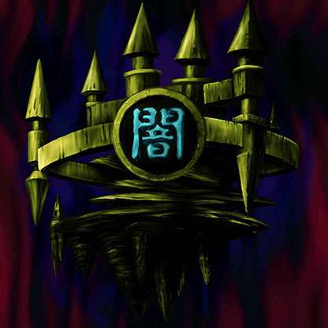

Castle of Dark Illusions

Description: "While this card is face-up in the defense position, all FIEND monsters are awarded a power-up bonus of 500 points."
STATS
ATK: 920
DEF: 1930DECK COST
Deck Cost per Card: 34EFFECT NOT IMPLEMENTED
Fusion List (3 Possible Fusions)
- Castle of Dark Illusions + Celtic Guardian = Dark Elf
- Castle of Dark Illusions + Gemini Elf = Dark Elf
- Castle of Dark Illusions + Job-Change Mirror = Ryu-Kishin Powered